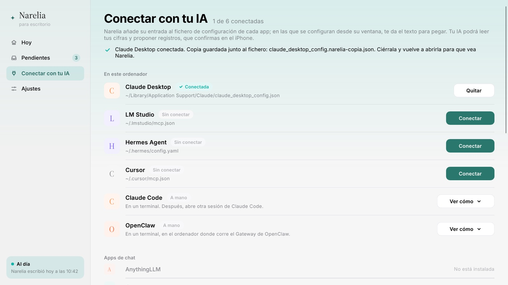

Narelia para Mac · descarga
Tus cifras, en tu Mac.
Narelia para Mac lee el fichero cifrado que tu iPhone deja en tu carpeta de iCloud Drive, te enseña las cifras de hoy y conecta tu IA con un botón. No tiene cuenta ni servidor, y no envía nada a ninguna parte.

Antes de abrirla
Aún no está firmada ni notarizada.
Narelia para Mac todavía no lleva la firma de Apple Developer ID. Por eso, la primera vez, macOS avisa de que no puede comprobar quién la hizo. La firma está prevista para una versión posterior.
-
Arrástrala a Aplicaciones
Abre el .dmg y lleva Narelia a la carpeta Aplicaciones.
-
Clic derecho y «Abrir»
En Aplicaciones, haz clic derecho (o Control-clic) sobre Narelia, elige «Abrir» y confirma con «Abrir». Sólo hace falta la primera vez.
-
Si macOS no ofrece «Abrir»
En macOS 15 y posteriores puede salir sólo «Hecho». Ve a Ajustes del Sistema → Privacidad y seguridad, baja hasta el aviso de Narelia y pulsa «Abrir igualmente».
-
El Llavero puede preguntar una vez
Tu contraseña se guarda en el Llavero de macOS. Sin firma, cuando tu IA arranca narelia-mcp por primera vez tras instalar una versión nueva, macOS puede pedir permiso: pulsa «Permitir siempre».
Qué trae.
- La ventana
- Hoy, Pendientes, Conectar con tu IA y Ajustes. Lee tu carpeta y la vigila: cuando el iPhone escribe, la ventana se pone al día.
- narelia-mcp
- El servidor MCP, por stdio, que arrancan tus apps de IA. Lee tus cifras de hoy, por días, compara periodos y propone registros que esperan tu confirmación.
- Nada fuera de tu Mac
- Sólo lee y escribe en tu carpeta. La contraseña va al Llavero, nunca a un fichero ni a la configuración de tus apps. Antes de tocar una configuración, guarda una copia a su lado.